For my fourth-year robotics and manufacturing automation course, my team and I built the PLC control system for the final quality assurance station of an automated nut-and-bolt packaging line. The full line was split across four student work cells: assembly, transfer, packaging, and QA. Our cell sat at the end, and the PLC was the brain of it. It had to read inspection results from the upstream machine vision system over OPC, run ladder logic in RSLogix 500 to decide whether each container passed three independent checks (correct assembly, correct count, lid present), and drive a set of indicator-light outputs as the operator interface. All three checks had to be true for a container to be accepted. Two out of three was still a failed product.
The two RSLogix 500 ladder programs below are the core of the control system. The first is the combined program we demonstrated, which handles both fastener and lid detection inside one cycle. The second is the parts-only program designed for a pre-lid station, where fastener inspection runs on its own without any lid-marker interference. Underneath them is a live shot of the green output energizing during a successful lid detection on the test rig, with the lid inspection screen visible on the monitor in the background.
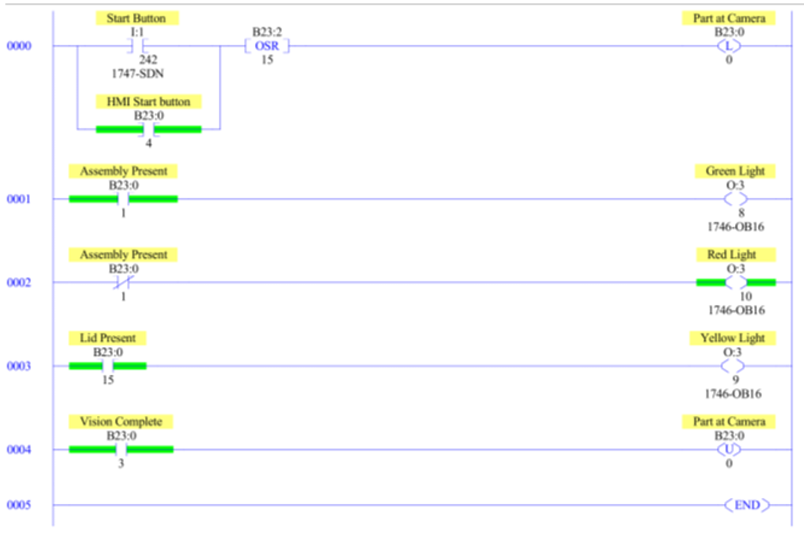
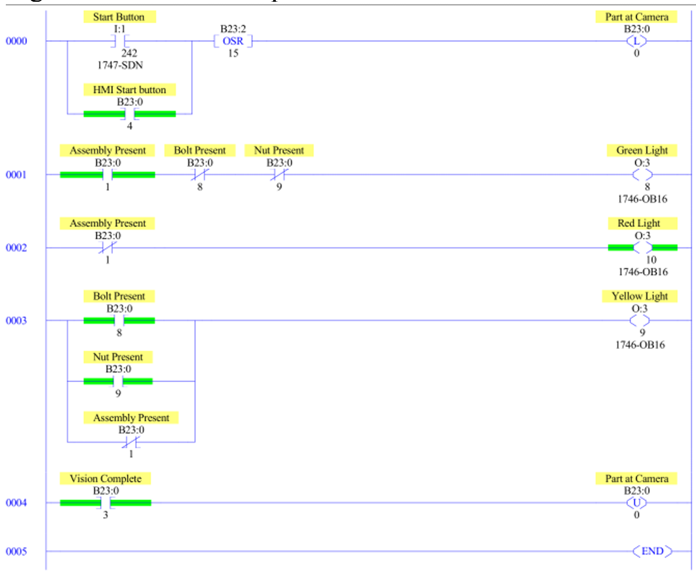
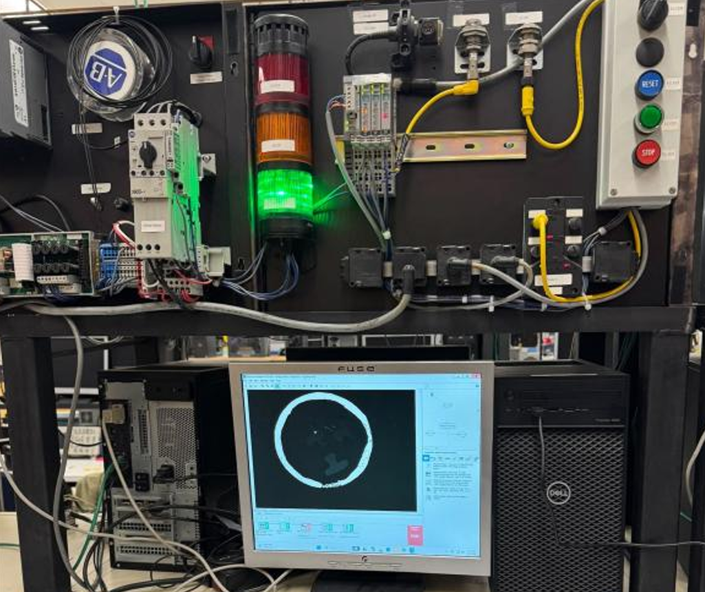
We considered a microcontroller as the lower-cost alternative. It could have run the same pass/fail logic, but a PLC was the right call here for a few reasons. Industrial PLCs run on deterministic scan cycles, which means latency from input to output is predictable and bounded rather than something we have to characterize ourselves. They handle digital I/O reliably through standard modules without needing extra protection circuitry. And the development cycle in RSLogix 500 (edit ladder, download, monitor live) is well-suited to iterating quickly inside a few lab sessions.
On the Allen-Bradley hardware we used, the scan time is around 10 ms, which gave us total system latency under about 25 ms from inspection completion to the indicator light turning on. That is well under what an operator perceives as instantaneous, which is exactly what you want for live pass/fail feedback.
The PLC sits at the centre of the control loop. NI Vision Builder runs an image inspection sequence on each container that arrives at the fixed overhead camera, publishes the results to a set of OPC tags, and the PLC reads those tags inside its scan cycle. Four tags carry the information the PLC needs: nut-only present, bolt-only present, completed assembly present, and lid present. Each one is a Boolean updated by the vision system. The ladder logic combines them into a pass/fail decision and drives one of three outputs on the 1746-OB16 output module: green for a fully correct package, yellow for the wrong assembly count without any loose parts in the image, and red whenever loose nuts or bolts are detected. A separate green output handles the lid pass.
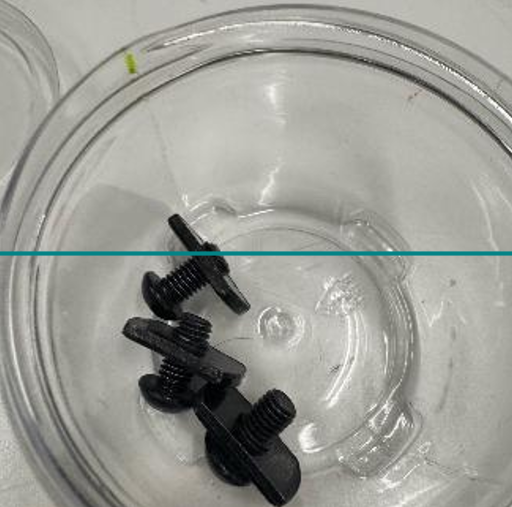
The ladder is built around a small set of rungs, each responsible for one decision. The first rung captures the start signal: a physical Start Button on input I:1 OR'd with an HMI Start bit at B23:0, with a one-shot rising (OSR) instruction so a held button does not retrigger the inspection on every scan. That latches a Part-at-Camera bit (B23:2/15), which tells the vision system to capture and run an inspection.
The remaining rungs consume the OPC tags coming back. The Assembly Present rung drives the green output O:3 when the tag is true. The Bolt Present and Nut Present rungs, OR'd together, drive the red output, because any loose part has to dominate the other conditions. The yellow output is gated on Assembly Present being false AND both loose-part flags being false, so it only lights up when the count is wrong but nothing loose is in frame. The Lid Present rung drives its own indicator. A final rung clears the Vision Complete and Part-at-Camera bits so the next container can be inspected cleanly.
The two ladder programs shown earlier reflect a real architectural choice. The parts-only ladder is cleaner: fewer rungs, one fewer input tag, and threshold settings on the vision side that can be tuned for fastener detection alone. The combined ladder is what we demonstrated, and it works, but it forces a compromise on the vision thresholds because both fastener and lid checks share one image. The parts-only version is what I would deploy in production.
The bridge between the vision system and the PLC is OPC. From the PLC's side it is invisible at runtime; the tags appear in RSLogix 500 like any other addressable bit. What it actually does is decouple the two systems. NI Vision Builder writes its inspection results to the OPC server at whatever rate it completes inspections, and the PLC reads the most recent value on its own scan cycle. The two sides do not need to be synchronized, and either can be modified independently as long as the tag names stay stable. That separation mattered during development, because the vision system and the ladder logic went through several iterations in parallel and OPC kept the interface consistent while both sides moved underneath it.
The vision system is effectively the PLC's sensor for this station. NI Vision Builder runs an area-based blob detection sequence on each captured image and classifies the contents against reference areas measured from sample images. A nut alone, a bolt alone in multiple orientations, and a completed assembly each have their own area range. Loose parts and assemblies are separated by a wide enough margin (assembly areas are roughly 1.5 to 2 times the area of a single component) that orientation variation does not push a part into the wrong bucket.
One issue we hit early was that the vision state machine was set up to run its checks in parallel. A cycle could exit without evaluating every condition, which meant the PLC sometimes saw a stale or incomplete picture of the container. We rearranged the state machine to run in series, so every cycle steps through every check before results are published to OPC. The PLC's inputs became consistent immediately after that change.
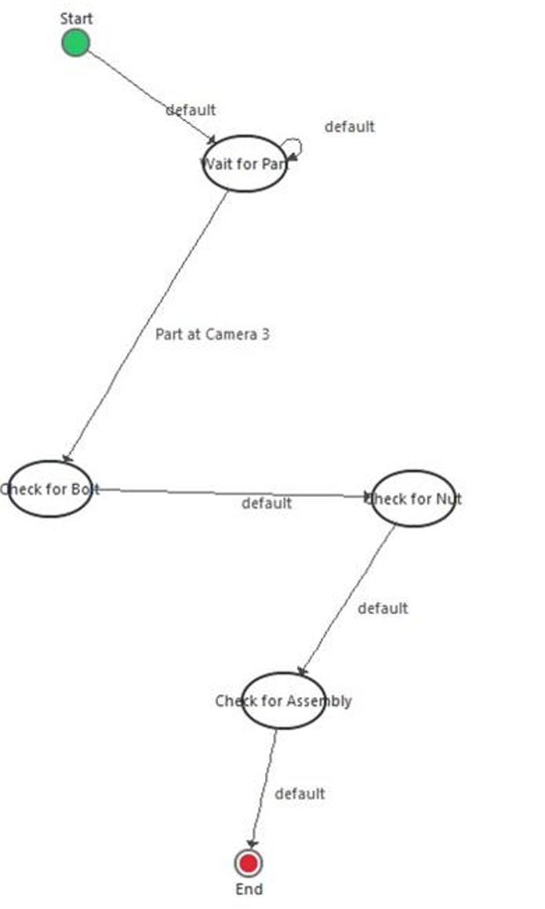
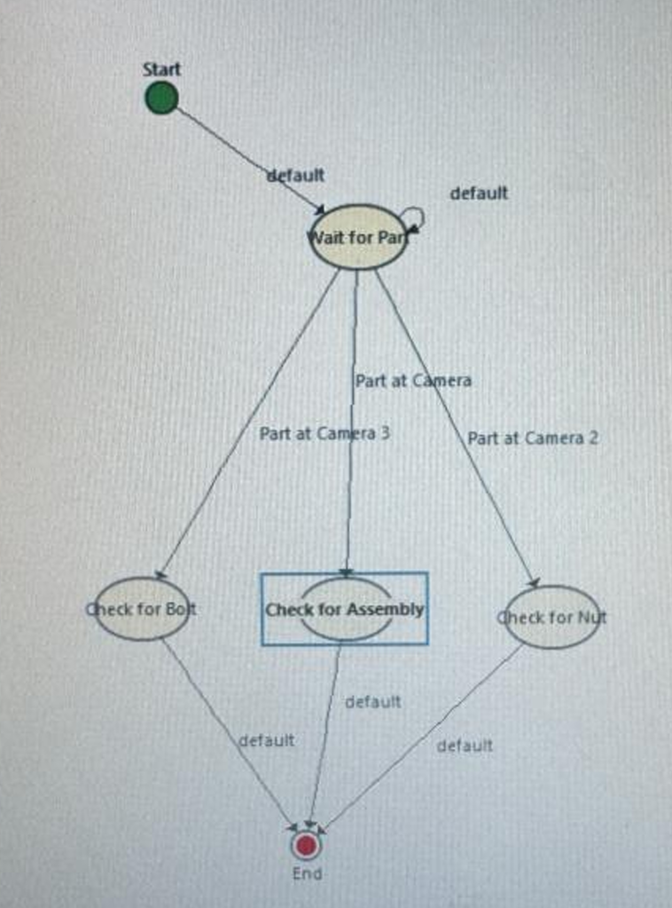
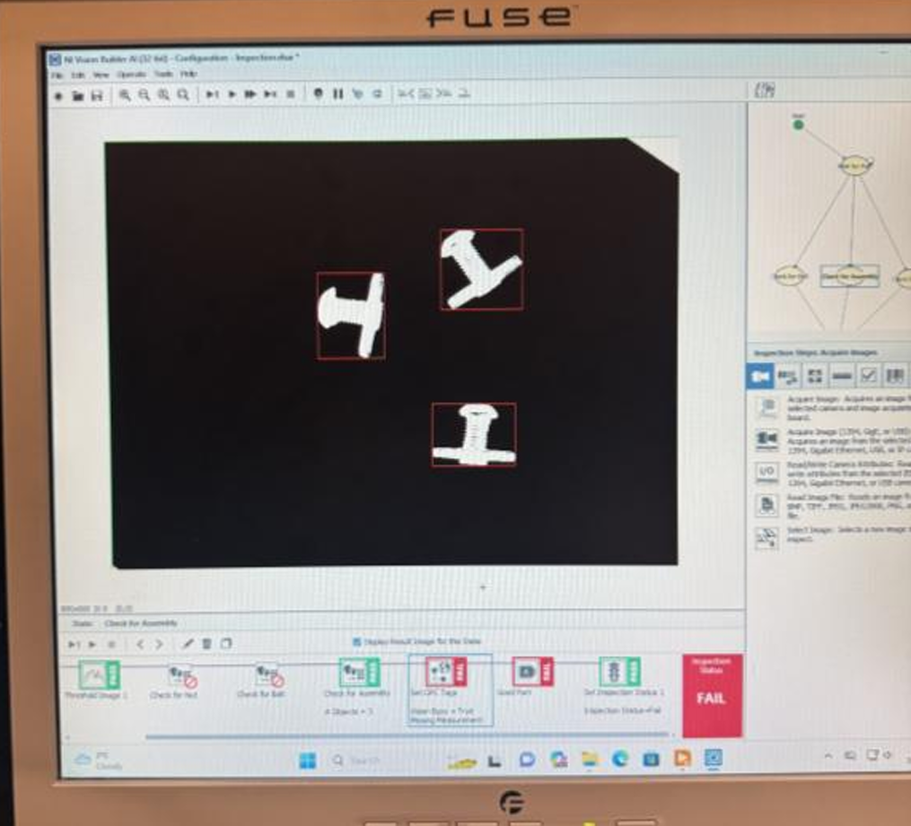
Lid detection took three iterations to land on something the PLC could rely on. The first marker was a small black dot on the lid. It worked in some cases but missed often when the lid shifted off-centre. The second marker was black tape around the rim. It was more visible, but the bolts in the assemblies are also black, and the area threshold settings needed for fastener detection meant the vision system could not reliably tell the rim apart from the bolt bodies. The result was an unreliable Lid Present tag, which the PLC had no way to compensate for, since ladder logic can only act on what its inputs tell it.
Switching the marker to yellow tape solved it completely. The contrast against the dark bolts was strong enough that lid detection became deterministic across our test cycles, and from the PLC's side the Lid Present tag became a clean Boolean we could trust. The lesson was an interface one: when an upstream sensor is unreliable, no amount of clever logic downstream will fix it. Fix the input first.
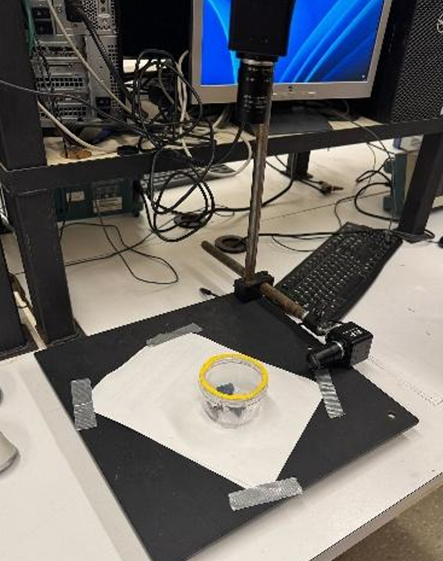
The operator interface is three tower lights driven directly by the PLC outputs on the 1746-OB16 module. There is no HMI screen in this version. A stack light is glanceable from anywhere on the work cell floor, does not depend on a host computer being awake, and represents pass/fail in a way that does not require interpretation. Each light is energized by a single OTE coil, with no latching needed because the next inspection cycle overwrites the previous result automatically. The three photos below show each output triggering in turn: red on a container with loose parts, yellow on a container with the wrong assembly count, and green on a fully correct package.
A LabVIEW-based HMI was discussed at the concept stage and would have exposed richer information: which condition failed, package counts over a shift, fault history. We did not build it inside the project timeline, and it is the clearest extension on the PLC side of the system. The OPC layer already in place would carry the same tags to a LabVIEW front-end without changing the ladder.
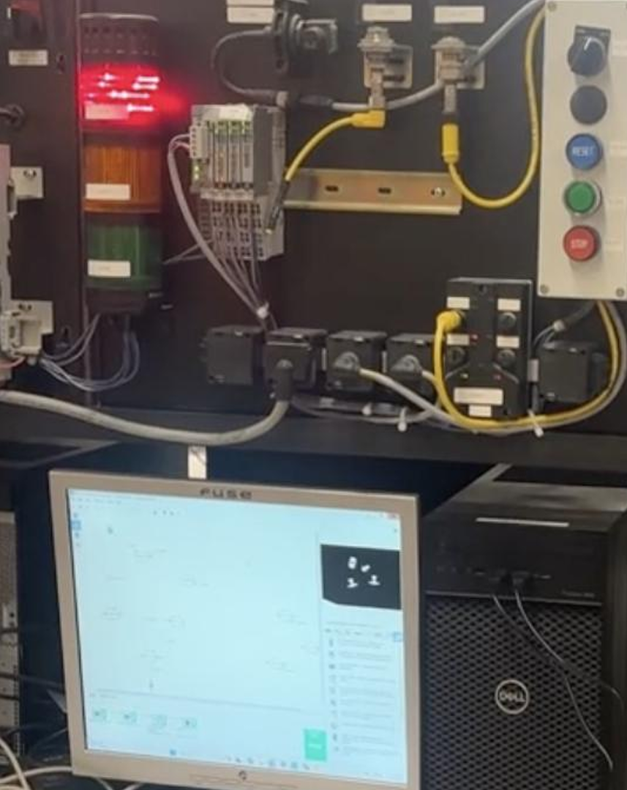
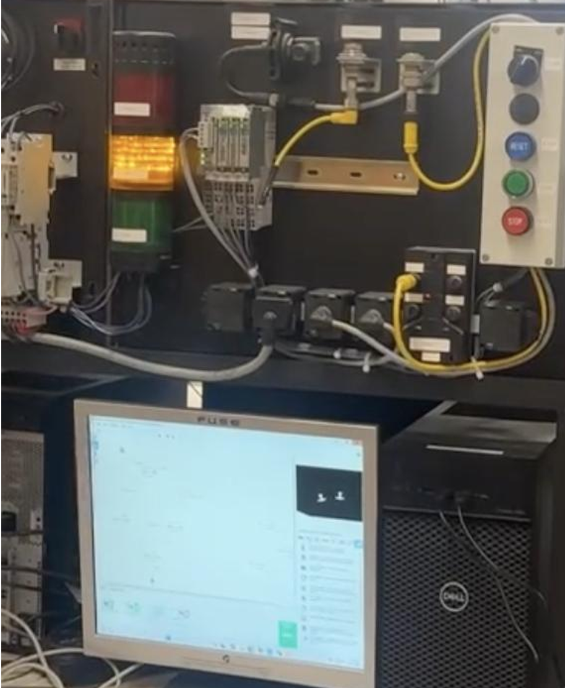
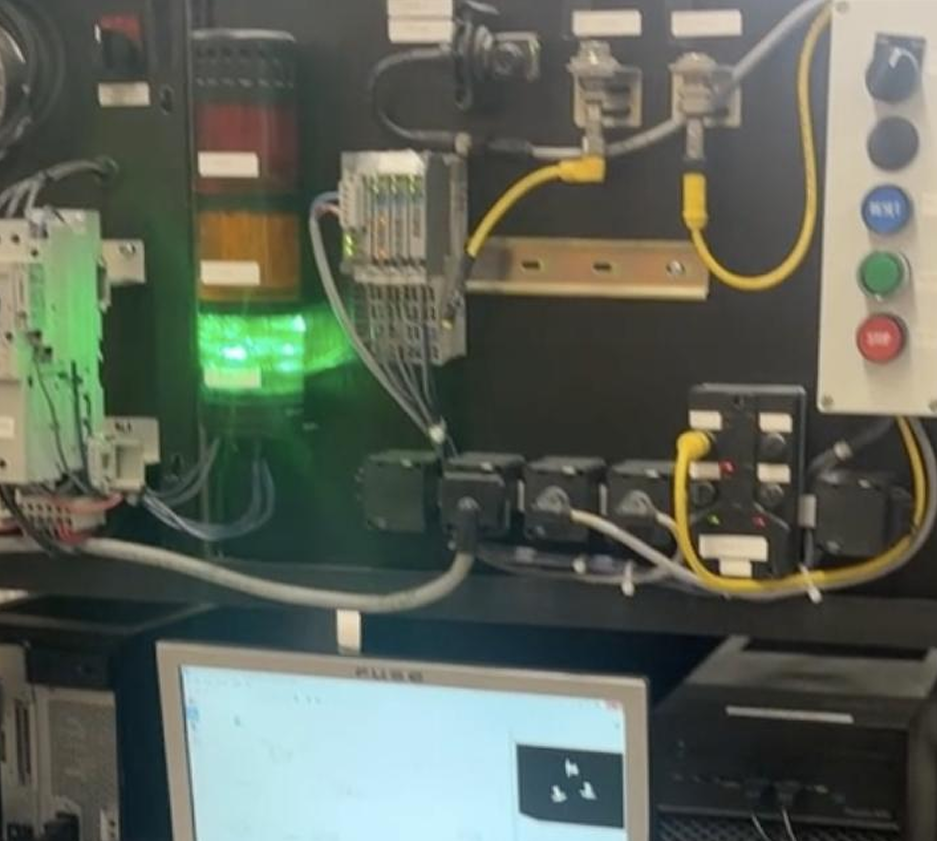
The honest weakness in the demonstrated system is that fastener detection and lid detection share one inspection cycle, which forces one PLC program to handle both. The better architecture is two separate programs at two physical stations: a pre-lid station running the parts-only ladder, and an end-of-line station running a lid-only ladder. Each program is simpler, each can be debugged in isolation, and the threshold settings on the vision side can be tuned for one task instead of compromising between two. We chose the combined approach to ship the demo end-to-end, but the two-program architecture is the cleaner long-term design and is the first thing I would change in a revision.
Under the controlled lab conditions of the final demonstration, the PLC consistently read the correct vision outputs over OPC and drove the correct indicator output on every test container. Total latency from inspection completion to operator feedback came in under 25 ms, well below the roughly five-second-per-container pace the line ran at. Once the inspection state machine was running in series and the lid marker was yellow tape, the PLC's inputs were clean enough that the ladder logic never produced an incorrect output that was the PLC's fault.
The remaining limitation is upstream. Vision performance degrades if lighting, camera position, or background change, which means the inputs the PLC sees are only as reliable as the imaging conditions. The control side is solid; the sensing side is the part that would need work in a less controlled environment.
The clearest PLC-side extensions are a LabVIEW HMI that exposes internal state and fault breakdowns over the same OPC layer the vision system already uses, and a redundant weight-check input that would give the ladder logic a second independent signal to cross-validate against. Beyond those, splitting the system into two stations with their own dedicated PLC programs is the architecture upgrade I would prioritize, since it removes the threshold compromise that the combined inspection forces today.
The PLC was the right platform for this work, and the system holds together as much because of the boring industrial fundamentals as anything else: deterministic scan cycles, clean digital outputs, OPC isolating the vision side from the control side, and ladder logic simple enough to read in one pass. The interesting failure modes all turned out to be at the input boundary, not inside the PLC itself, which is a good sign for the control design. What I came away with is a much better intuition for how a PLC's view of the world is shaped by what its sensors give it, and for why splitting an integrated cell into well-bounded, single-purpose programs is almost always worth the extra setup time.
If you'd like to know more about my work or discuss potential collaborations, feel free to contact me via email or phone.
Toronto, Ontario
Canada, L4J 9K2